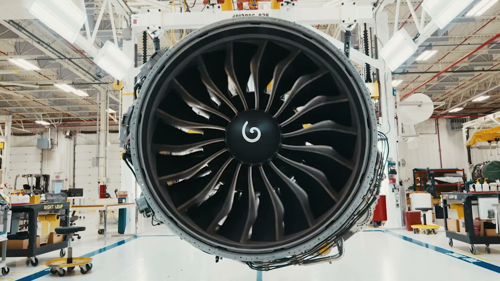

Everything built so far, what finishes the hub, and where it goes next.
Everything below is in scope. One item is pending.
Phase 1 agreed June 17. Phase 2 agreed August 12.
Role based layout. Priority tools in two clicks.
One searchable directory, on an approved taxonomy.
Prompts callable inside templates. Curated prompts dashboard.
Board photo to maturity rating to action, asynchronously.
The Phase 1 list is complete. The blue rows were never on it, and they came inside the same commitment.
Finished means live in SharePoint with written GE approval.
A page that explains a method does not change how the work gets done. A tool does. Five Fundamentals have one, and the last three are already on the run home.
Three more sit across the hub itself: the Wingmate prompt library, the next step router and the guided recommendation.
Every one is new surface. None of it is going back over ground already covered.
Through QA, into SharePoint, approved in writing.
The pages each Fundamental points into. Depth where there is now a heading.
Ten are built across five Fundamentals. The remaining three complete the set.
One search across Fundamentals, detail pages and templates, on the library filters.
Rebuilt on the finished set, so two clicks holds across the whole hub.
Same commitment, a list that matches what the hub needs. Wingmate, the Prompt Library and Huddle Coach all move into Phase 3 whole, where the decisions they depend on can be settled properly. If this reads right to you, we will write it down so both sides hold the same list.

Nothing here needs signing today. We would just like to know the shape looks right to you.
Then Phase 3, where the hub stops being pages and starts carrying context between them.